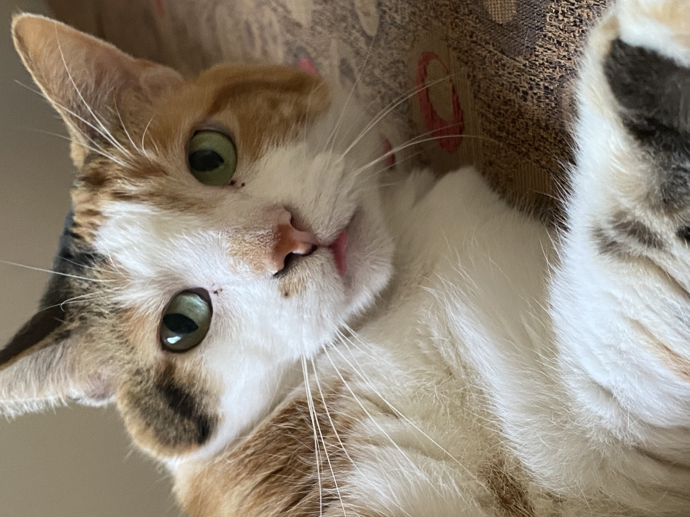
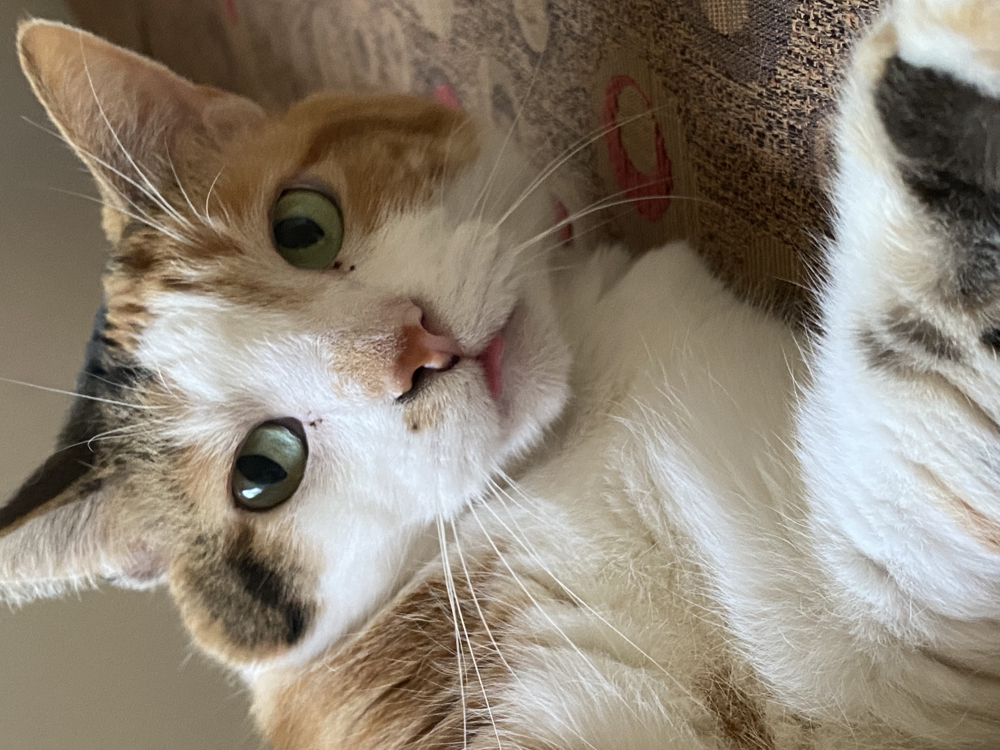

About Me and My Cats
 

I've had cats pretty much as long as I can remember. Before I was born, my parents got a cat named Bailey, and later a second cat named Chloe (pictured below). Growing up with them instilled in me a love for cats. Despite my cat and pet allergies, I always was with them and loved them.
All I had ever known was cats, and once my first two cats sadly passed away, our house felt empty. While my allergies were certainly better and my dad argued that this was for the better, my mom, my sister, and I all knew that we needed to get cats again. After a few months of searching, we found two sister kittens who we loved. We adopted them and named them Stella (left) and Lulu (right).